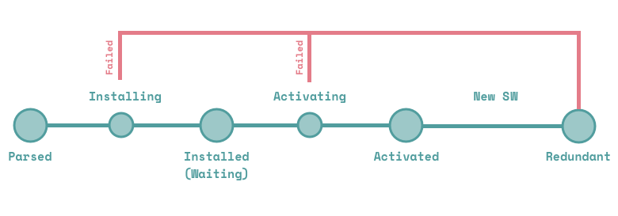

网络状况:Good
PWA 是什么？
PWA （ Progressive Web Apps，渐进式网页应用）是由谷歌提出的新一代 Web 应用概念，旨在提供可靠、快速、类似 Native 应用的服务方案。
一个 PWA 应用首先是一个网页, 可以通过 Web 技术编写出一个网页应用. 随后添加上 App Manifest 和 Service Worker 来实现 PWA 的安装和离线等功能。
PWAs对于开发者和用户有以下优点：
1.你只需要基于开放的 W3C 标准的 web 开发技术来开发一个app。不需要多客户端开发。
2.用户可以在安装前就体验你的 app。
3.不需要通过 AppStore 下载 app。app 会自动升级不需要用户升级。
4.用户会受到‘安装’的提示，点击安装会增加一个图标到用户首屏。
5.被打开时，PWA 会展示一个有吸引力的闪屏。
6.chrome 提供了可选选项，可以使 PWA 得到全屏体验。
7.必要的文件会被本地缓存，因此会比标准的web app 响应更快（也许也会比native app响应快）
8.安装及其轻量,或许会有几百 kb 的缓存数据。
9.网站的数据传输必须是 https 连接。
10.PWAs 可以离线工作，并且在网络恢复时可以同步最新数据。
Service Worker 是什么？
一个 service worker 是一段运行在浏览器后台进程里的脚本，它独立于当前页面，提供了那些不需要与web页面交互的功能在网页背后悄悄执行的能力。在将来，基于它可以实现消息推送，静默更新以及地理围栏等服务，但是目前它首先要具备的功能是拦截和处理网络请求，包括可编程的响应缓存管理。
为什么说这个API是一个非常棒的API呢？因为它使得开发者可以支持非常好的离线体验，它给予开发者完全控制离线数据的能力。
Service Worker 的生命周期:
Service worker拥有一个完全独立于Web页面的生命周期。
要让一个service worker在你的网站上生效，你需要先在你的网页中注册它。注册一个service worker之后，浏览器会在后台默默启动一个service worker的安装过程。
在安装过程中，浏览器会加载并缓存一些静态资源。如果所有的文件被缓存成功，service worker就安装成功了。如果有任何文件加载或缓存失败，那么安装过程就会失败，service worker就不能被激活（也即没能安装成功）。如果发生这样的问题，别担心，它会在下次再尝试安装。
当安装完成后，service worker的下一步是激活，在这一阶段，你还可以升级一个service worker的版本，具体内容我们会在后面讲到。
在激活之后，service worker将接管所有在自己管辖域范围内的页面，但是如果一个页面是刚刚注册了service worker，那么它这一次不会被接管，到下一次加载页面的时候，service worker才会生效。
当service worker接管了页面之后，它可能有两种状态：要么被终止以节省内存，要么会处理fetch和message事件，这两个事件分别产生于一个网络请求出现或者页面上发送了一个消息。
下图是一个简化了的service worker初次安装的生命周期：
